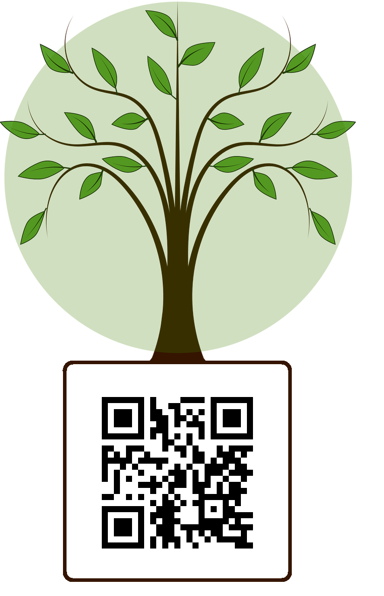

<!--
  Generated template for the InicialPage page.

  See http://ionicframework.com/docs/components/#navigation for more info on
  Ionic pages and navigation.
-->
<ion-header>
  <ion-navbar color="light">
    <!-- <button ion-button menuToggle>
      <ion-icon name="menu"></ion-icon>
    </button> -->
    <ion-buttons right>
      <button ion-button icon-only >
        <ion-icon color="cinza" name="help"></ion-icon>
      </button>
    </ion-buttons>
    <ion-title color="cinza" text-right>Dúvidas sobre como utilizar o aplicativo?</ion-title> 
  </ion-navbar>
</ion-header>


<ion-content padding>

  <div>
    <ion-grid>
      <ion-row justify-content-center>
        <ion-col>
          
        </ion-col>

        <ion-footer>
          <ion-toolbar text-center="" class= "botaoPrincipal" color="verde3">
            <ion-buttons>
              <button (click)="scanCode()" ion-button>
                <ion-label class="textoBotaoPrincipal">Escanear QR Code</ion-label>
                <ion-icon class="iconeBotaoPrincipal" name="qr-scanner" end></ion-icon>
              </button>
            </ion-buttons>
          </ion-toolbar>
        </ion-footer>
      </ion-row>
    </ion-grid>
  </div>
</ion-content> 